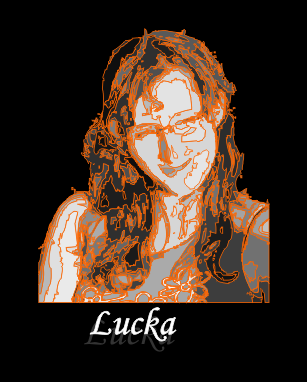
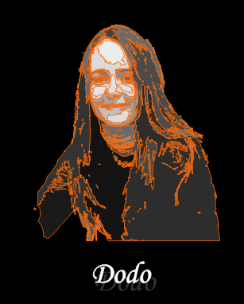
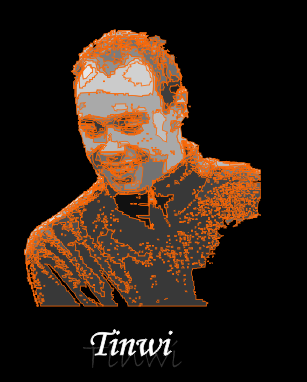
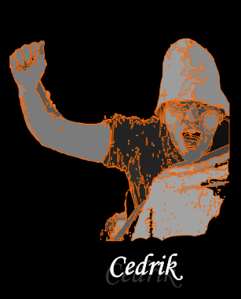
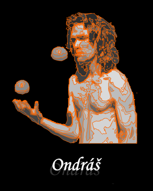
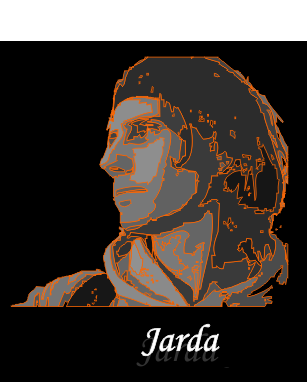

Ano. Je to jen otázkou cviku. Vždyť existuje tolik druhů pohybu! Někam ukazuješ, máváš rukou, podupáváš nohou o zem, bubnuješ prsty o stůl, zíváš a dáváš si ruku před ústa, ucukáváš od rozpálených kamen, protahuješ si záda... Některé pohyby vůbec nevnímáš, jsou tak automatizované, že tě překvapí, když si toho někdo jiný všimne. Pokud patříš mezi 95% lidí, pak když čekáš na přechodu a blikne zelená, tak se těsně před vykročením podíváš na obrubník. Víš o tom? Že ne? Pozoruj... pokus se vnímat... pohyb pak může proniknout do všech tvých smyslů, plně a hluboce tě zaujmout... tak moc, že ani nemáš prostor vnímat nic jiného. Stačí se jen otevřít vlastnímu tělu a nechat se vést. ANO! Žít = být v pohybu. "/>
Pohyb lze vnímat zrakem, když pozorujete tančící tělo, chutí, pokusíte-li se spolnkout ono slovo, které vám při tom pohledu uvízlo v krku, sluchem, když pohybující se postava rozetne jeden vzdušný vír a vytvoří další, hmatem, přiložíte-li svou dlaň k chvějící se zemi, i čichem, nasajete-li vůni rozpohybovaného prostoru. Pohyb lze ovšem vnímat i srdcem a duší, jste-li to vy, kdo se pohybuje. Smysl lze hledat ve všem. Zda a jaký smysl se v pohybu skrývá ale vždy záleží jen na tom, kdo jej v něm chce najít. " />
Pohyb se podlě mě dá určitě vnímat všemi smysly.. stejně, jako spoustu dalších věcí. Když má člověk štěstí, stane se na chvilku pohybem. Třebas jen na krátký okamžik. A potom všechny smysly spolupracují dohromady. A jestli má pohyb smysl? Když se cítím pod psa, umožní mi si zlepšit náladu, uvědomit si, že moje „starosti“ jsou malé, pustit se jich a nechat je odplout. Když je mi do jásání, umožní mi prožít si radost ještě líp. Když potřebuji „zastavit hlavu“, klidné vnímání pohybu vlastního těla, ať už při tanci, nebo třebas na slackline, je pro mě tou pravou volbou. A mohl bych pokračovat... Ještě se ptáte, jestli má pohyb smysl? :) " />
Určitě ano, skoro bych se nebál zeptat jestli pohyb není i součástí šestého smyslu:-) Bezpochyby má smysl, nakonec pohyb je základem všeho... vše na celé zemi je neustále v pohybu, od jednotlivých atomů až po celou naší planetu. A kdo nakonec ví kam se celý vesmír hýbe, sune, plachtí, letí, míří, točí se... "/>

Bezpochyby ano. Pohyb má projekci do všech smyslů, které člověk má, jen si to často neuvědomuje.
Pohyb jde snadno vidět, občas slyšet, hmatem lze sledovat stažení či uvolnění svalů, které jej vytváří a můžete i čichem zaznamenat pach tanečníka, i slanost kapky potu, když jste dost blízko, ale úplně nejzajímavější je ten pohyb dělat, prožívat jej zevnitř, cítit jej v celém těle i srdci, stát se pohybem a pohybovat se s ostatními. Pohyb je jednoduše náplní života. Bez přemisťování věcí bychom stěží existovali.
Možná je pohyb a uvádění do pohybu smyslem života. ;) " />
Pohyb jde snadno vidět, občas slyšet, hmatem lze sledovat stažení či uvolnění svalů, které jej vytváří a můžete i čichem zaznamenat pach tanečníka, i slanost kapky potu, když jste dost blízko, ale úplně nejzajímavější je ten pohyb dělat, prožívat jej zevnitř, cítit jej v celém těle i srdci, stát se pohybem a pohybovat se s ostatními.
Možná je pohyb a uvádění do pohybu smyslem života. ;)